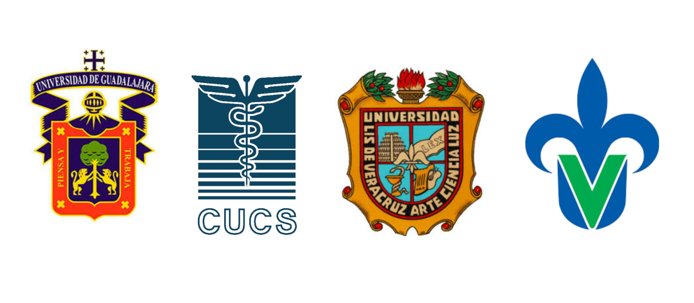
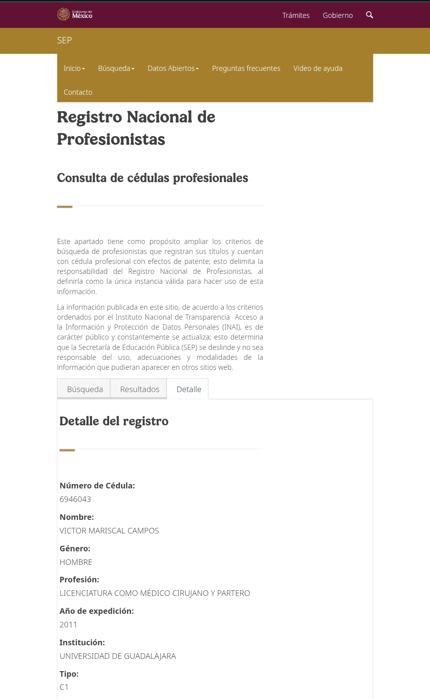

Acerca de mí
La medicina interna es la especialidad médica que se dedica a la atención integral del adulto enfermo, enfocándose en la prevención, diagnóstico y tratamiento no quirúrgico de enfermedades que afectan a los órganos internos. Nuestra misión es brindar atención médica de excelencia, basada en la evidencia científica. La visión es ser un referente en el cuidado médico interno con un enfoque humano, ético y actualizado.
Escudos de formación
Búsqueda de cédula profesional
Consulta mis cédulas profesionales en el siguiente enlace: Buscar cédula profesional

Derechos del paciente
- Recibir atención médica adecuada.
- Recibir trato digno y respetuoso.
- Recibir información suficiente, clara, oportuna y veraz.
- Otorgar o no su consentimiento válidamente informado.
- Ser tratado con confidencialidad.
Derechos del médico
- Ejercer su profesión en un ambiente adecuado.
- Recibir un trato respetuoso por parte del paciente.
- Contar con los insumos necesarios para su labor.
- Recibir una remuneración justa.
- Ser protegido ante agresiones o demandas injustificadas.